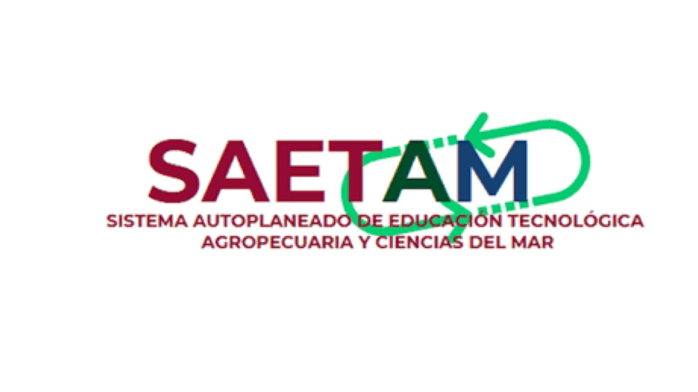

SAETAM
Sistema Estatal de Telebachilleratos de México
El Sistema Estatal de Telebachilleratos (SAETAM) es una modalidad educativa en México que ofrece opciones de Bachillerato en comunidades rurales o con menor acceso a servicios educativos. Su objetivo es brindar educación de calidad a estudiantes que no pueden asistir a escuelas tradicionales debido a la lejanía de las instituciones educativas o a la falta de recursos.
SETAM es un sistema que se adapta a las necesidades de cada comunidad, con un enfoque inclusivo que tiene en cuenta las particularidades sociales, culturales y económicas de cada región. A través de esta modalidad, los estudiantes tienen la oportunidad de acceder a una formación académica que les permita continuar con sus estudios superiores o integrarse al ámbito laboral.

Características de SAETAM
Modalidad semiescolarizada
- Combina clases presenciales con actividades a distancia
- Los alumnos asisten algunos días a la semana para recibir asesorías y clases teóricas.
- Las actividades a distancia incluyen el estudio independiente y el uso de plataformas digitales.
Enfoque práctico
- Se prioriza el aprendizaje autónomo, estimulando la autoorganización y la disciplina.
- Los estudiantes desarrollan habilidades prácticas que les permiten insertarse en el ámbito laboral o continuar con sus estudios superiores.
- El enfoque práctico es esencial para resolver problemas de la vida diaria y de su comunidad.
Infraestructura básica
- En muchos casos, las aulas se establecen en espacios comunitarios como centros culturales o casas de la cultura.
- Los recursos educativos se adaptan a las necesidades y posibilidades de cada comunidad.
- Las tecnologías de la información son una herramienta clave, con el uso de plataformas digitales y materiales impresos para facilitar el aprendizaje.
Apoyo a las comunidades
- SETAM trabaja estrechamente con las comunidades locales para fomentar el desarrollo social, cultural y económico.
- Las actividades extraescolares como talleres, cursos y conferencias también son parte fundamental del modelo educativo.